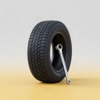
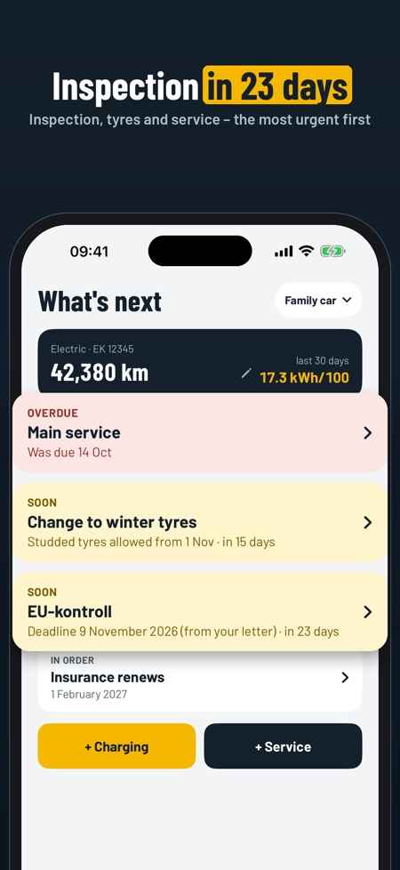
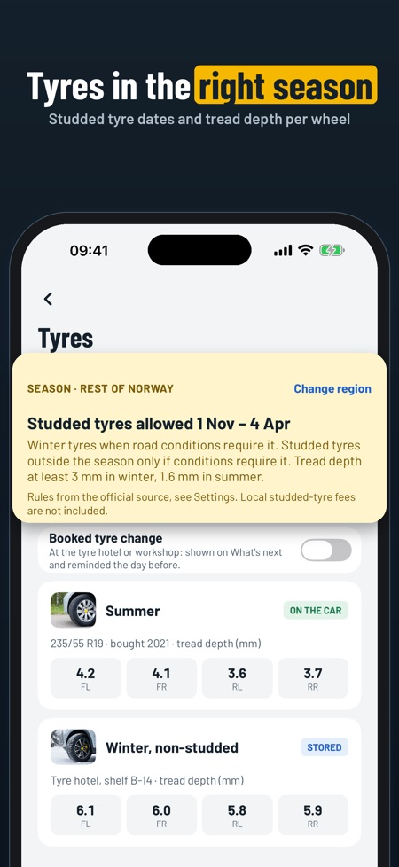
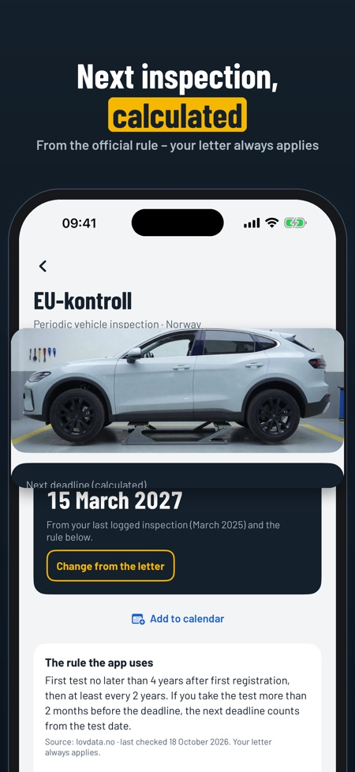

Inspection, tyres, fuel & EV. Your next periodic inspection from the official Nordic rule, tyre changes in the right season and a service history for the buyer as a PDF. No account, all on your phone.



Do you know when your next inspection is due? Bilboka works it out from the registration document and the official rule – and reminds you about tyre changes and service. Made for Norway, Sweden, Denmark and Finland.
WHAT'S NEXT
• Inspection, main service, tyre change, insurance and vehicle tax (Sweden, Denmark, Finland) on one screen, most urgent first
• Reminders before the dates
PERIODIC INSPECTION
• EU-kontroll, besiktning, periodisk syn or katsastus: the next deadline from the first registration and the country's official rule
• A different date in your letter? Type it in – the letter always applies
• Checklist before the test, and the deadline straight into your calendar
TYRES
• The studded and winter tyre seasons of your country (and region in Norway)
• Summer and winter sets with tread depth per wheel and where they are stored
• A warning when tread depth is below the legal minimum
• A booked tyre change at the tyre hotel, reminded the day before
FUEL AND CHARGING
• Litres or kWh, price and odometer
• Consumption per 100 km or per Scandinavian mil, from full tank or full charge
• The odometer cannot go backwards, and the app asks if a reading looks wrong
• Update the odometer right from the home screen
SERVICE AND COSTS
• Service book with workshop, what was done, price and a scanned receipt
• Next service by your own interval in km or months
• Costs per month and category, and cost per km
SELL REPORT AND DOCUMENTS
• The full history as a PDF for the buyer, with receipts if you like – and prices hidden if you like
• See the report with your own entries before you buy
• Registration document, insurance and warranty scanned and kept per car
• Export of all entries as CSV
BACKUP
• Save everything as one file and move it to a new iPhone – no purchase needed
• A reminder when the last backup is a while ago
No account and no plate lookup: you add the car yourself, and everything stays on your phone.
PRICE
One car, the log, receipts, inspection and tyre reminders and the backup work without a purchase. More cars, costs and charts, sharing the sell report, documents and CSV unlock with a one-time purchase. No subscription.
The rules come from Statens vegvesen, Transportstyrelsen, Færdselsstyrelsen and Traficom, with source and date in the app. Bilboka is independent and not affiliated with them. Always check your letter.